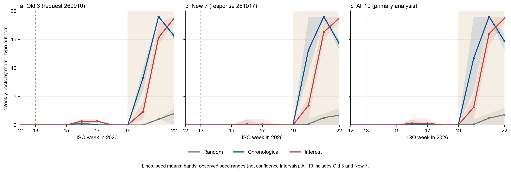
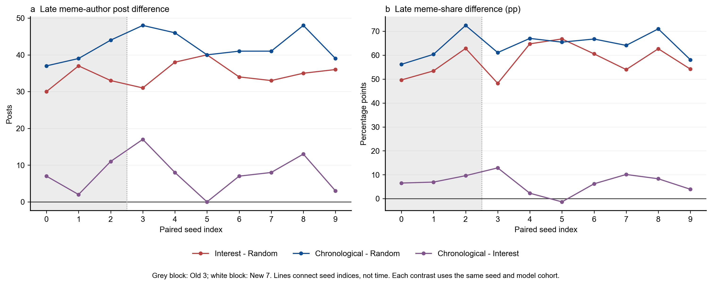
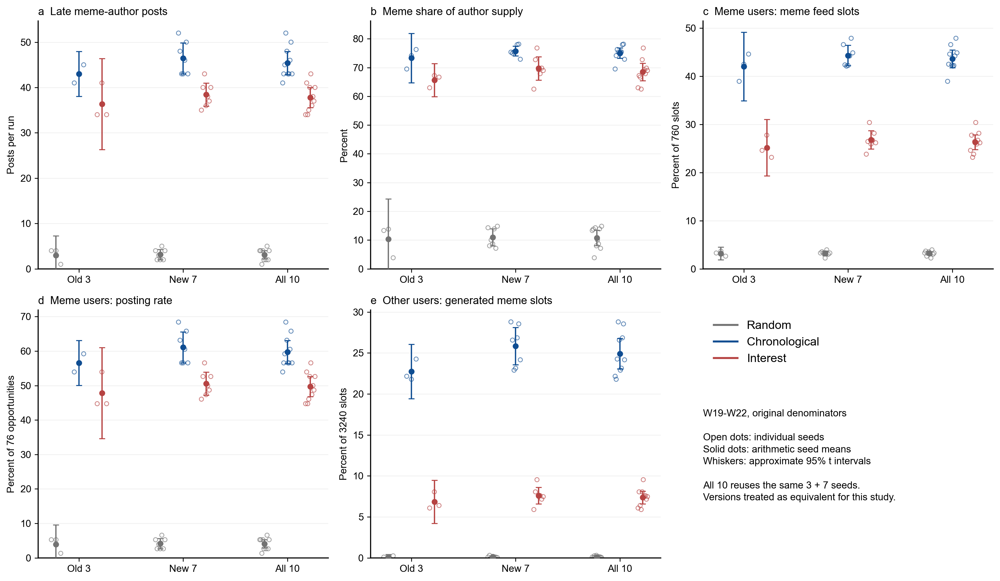

1. Scope and original measurement
Under the convention explicitly adopted by the user, the old and new models are treated as equivalent for this study (adopted convention); pooling ten seeds per arm is the primary analysis, and precise version labels are retained only for provenance. The direction of interest and chronological above random remains stable, with the complete chronological configuration generally higher on late-window outcomes. However, the chronological arm also admits generated posts sooner, permits within-week recirculation and uses different candidate rules; its advantage cannot be attributed to chronological ranking alone.
Only the three main arms of H4E2, seed0–9, enter this analysis. Ablations and simulations are unchanged. Author supply and exposure follow original paper Figures 3/4 and paper/figures/scripts/prepare_simulation.py: successful posted outcomes are classified by author agent_type, not independent text semantics. External, official and initial-pool posts do not enter Agent supply.
W19–W22 supply share is computed within each run before averaging seeds. Meme share seen by meme agents includes external and generated type=meme items over 760 slots; posting rate uses 76 opportunities; cross-group redisplay uses only source=agent, type=meme over 3240 non-meme-agent slots. Ten numeric feed slots differ from the first five items in the generation prompt. Redisplay does not identify an independent net feedback effect.
Main attribution limit: common external eligibility, different generated-post admission
In timestamp mode, curation_arrival_schedule.py lines61–62 grant external real posts eligibility at the same published_at in all arms; this does not imply identical exposure.
| Component | Chronological | Random / interest |
|---|---|---|
| External real-post eligibility | Same published_at | Same published_at |
| Generated-post visibility | Admitted at batch end; visible in later hourly batches | Next weekly boundary |
| Current-batch feedback | Frozen feed snapshots are not revised | Frozen feed snapshots are not revised |
| Candidates / selection | Admitted candidates ordered by publication time | Random sampling / interest live candidates, floors and vitality |
Generated-post available_at and admission are at step() lines278–297; candidate and feed rules are at lines131–173. This is a bundle of ranking, faster generated-post admission / within-week recirculation and candidate rules. Existing results cannot quantify their separate contributions; no ablation changes or simulation reruns are made.
2. Data and verification
Included: 30 completed runs, 330 run×week rows, 3000 Agent workspaces and 6041 successful posts. Each run contains 100 agents, 11 weeks, 693 steps, 1100 unique actions and complete unique decisions without failure. Seeds are replicates; 33000 Agent×week decisions are not independent samples.
| Data layer | Scope | Role |
|---|---|---|
| Run level | 30 rows | Ten seeds per arm; original five outcomes |
| Weekly level | 330 rows | W12–W22 and late window |
| Agent workspaces | 3000 | Author, posted, decisions and exposure |
| Successful posts | 6041 | Completed scientific results |
EDA quick statistics, the exploration audit and the evidence index link sources. The old nine-run weekly table and original paper Figures 3/4 reproduce cell for cell. Only current seed10 assets enter; unrelated historical analyses do not.
The source manifest selects timestamp_v1_interest_s6_resume1 and timestamp_v1_random_s7_retry1. The original failed random seed7 attempt (224 actions, 54 posts, 54 body requests) is excluded from scientific outcomes; the resumed interest seed6 is not double counted. Operational budget and scientific outcome accounting remain distinct.
No interactive EDA yet. Run run-eda --type bundle.
3. Findings: direction and differences after extension
Finding 1 · Interest and chronological both exceed random
seed10_c1: Interest−random and chronological−random are positive for all ten seeds on the five outcomes, including 7/7 added seeds. Table 1 reports W19–W22 seed-level means, n=10 per arm.
Table 1 · All ten seeds; ratios are computed per run before averaging.
| Metric | Random | Chronological | Interest |
|---|---|---|---|
| Late meme-author posts | 3.100 | 45.400 | 37.800 |
| Meme-author supply share | 10.780% | 75.011% | 68.472% |
| Meme share seen by meme agents | 3.224% | 43.632% | 26.316% |
| Meme-agent posting rate | 4.079% | 59.737% | 49.737% |
| Cross-group generated-meme redisplay share | 0.114% | 24.920% | 7.373% |
Late supply-share differences: interest−random +57.692 percentage points, approximate paired t 95% interval 52.978–62.406; chronological−random +64.231 points, interval 60.413–68.049.

Stability refers to late growth and arm ordering; the transition week can differ by one week. By the largest category in mean weekly author supply, meme authors lead chronological from W20 in both cohorts. They lead interest from W21 in old3, W20 in new7 and W21 in all10. Marketing leads all three arms in W12, so this simulation does not establish a full education→mourning→meme sequence observed in real-world data.
Descriptive supplement: the mourning-author supply peak occurs in W13 for 10/10 interest and chronological seeds; random peaks often occur later. This is not new causal mechanism evidence and does not replace the late-window outcomes.
Finding 2 · Chronological generally exceeds interest, with a seed exception
seed10_c2: Chronological−interest late meme-author post count and posting rate have nine positives and one tie (seed5). Supply share has nine positives and one negative, seed5 at −1.347 percentage points. Within-group exposure and cross-group generated-meme redisplay have ten positives each. Not every outcome in every seed is strictly greater.
Mean supply-share difference is +6.539 percentage points, approximate paired t 95% interval 3.592–9.487. Within-group exposure is 43.632% versus 26.316%; cross-group redisplay is 24.920% versus 7.373%. These compare complete curation configurations, not an isolated chronological-ranking effect: generated-post admission / within-week recirculation and candidate rules also differ, and their separate contributions cannot be quantified.

Removing any one seed preserves the positive mean direction of all five outcomes and three contrasts. No single seed drives the aggregate ordering.
Finding 3 · Batch provenance and supplementary robustness
seed10_c3: Under the adopted study convention of model equivalence, pooled ten-seed comparisons are primary; old3 and new7 provide supplementary directional checks. Old seed0–2 requested deepseek-v4-1-flash-260910 and returned the undated alias deepseek-v4-1-flash. New seed3–9 requested deepseek-v4.1-flash and returned deepseek-v4-1-flash-261017. Version labels are retained only for provenance.
Table 2 · Old seed0–2, n=3 per arm.
| Metric | Random | Chronological | Interest |
|---|---|---|---|
| Late meme-author posts | 3.000 | 43.000 | 36.333 |
| Meme-author supply share | 10.324% | 73.300% | 65.614% |
| Meme share seen by meme agents | 3.202% | 42.018% | 25.175% |
| Meme-agent posting rate | 3.947% | 56.579% | 47.807% |
| Cross-group generated-meme redisplay share | 0.113% | 22.737% | 6.842% |
Table 3 · Added seed3–9, n=7 per arm.
| Metric | Random | Chronological | Interest |
|---|---|---|---|
| Late meme-author posts | 3.143 | 46.429 | 38.429 |
| Meme-author supply share | 10.975% | 75.745% | 69.697% |
| Meme share seen by meme agents | 3.233% | 44.323% | 26.805% |
| Meme-agent posting rate | 4.135% | 61.090% | 50.564% |
| Cross-group generated-meme redisplay share | 0.115% | 25.855% | 7.601% |
New-cohort supply shares are 75.745% chronological, 69.697% interest and 10.975% random, versus 73.300%, 65.614% and 10.324% in the old cohort. These supplementary strata retain the qualitative ordering. All10 is the primary analysis, containing old3 plus new7, not a third cohort to be double counted.

Figure 2 uses untruncated approximate t 95% intervals. Its vertical axes start at zero, so some negative lower bounds for old3 random are outside the plot. Full untruncated intervals are in seed10_arm_summary.csv; a negative bound reflects an unbounded approximation, not negative posts or proportions.
4. Statistical interpretation and conclusion limits
Each cohort has 15 exact two-sided sign-flip tests (five outcomes × three contrasts), corrected by Holm. Complete enumeration still assumes exchangeable signs or symmetric paired differences under the null. Post count and posting rate are linearly related, making the 15-test correction conservative. The t intervals use a small-sample approximation, are not simultaneous intervals.
| Cohort | Seeds per arm | Holm-adjusted p, 15 tests | Interpretation |
|---|---|---|---|
| Old3 | 3 | All 1 | Same direction; limited resolution |
| New7 (supplementary) | 7 | All 0.234375 | Subset does not independently pass corrected 0.05 |
| All10 (primary) | 10 | All 0.029296875 | Ten-seed paired configuration differences |
Under the adopted model-equivalence convention, pooled ten-seed primary comparisons support stable interest and chronological advantages over random; the complete chronological configuration is generally higher, and interest is not strongest. Added-seven supplementary results agree in direction, although their 15 corrected tests do not independently pass 0.05. The main attribution limit is simultaneous variation in ranking, faster generated-post admission / within-week recirculation and candidate rules, whose separate contributions cannot be quantified.
Interpretation is limited to this 100-agent, 11-week simulation and its frozen complete curation configurations. Author type is not text semantics, numeric exposure is not actual reading or real-user exposure, and redisplay is not an independent net feedback effect. Ablations remain untouched, and mechanism claims are not expanded. No conditions, simulations or raw outcomes were added or modified.
5. Appendix: auditable artifacts
| Artifact | Scope |
|---|---|
| seed10_runs.csv | 30 run级指标 / 30 run-level outcomes |
| seed10_weekly.csv | 330周记录 / 330 weekly rows |
| seed10_arm_summary.csv | 分层均值、区间 / Cohort means and intervals |
| seed10_paired_contrasts.csv | 配对、Holm、逐一剔除 / Paired tests, Holm, leave-one-out |
| seed10_sources.json | 路径、模型与校验和 / Paths, models and hashes |
| seed10_metrics.sqlite | 本轮数据库 / Current analysis database |
| evidence_index.json | 证据索引 / Evidence index |
The three figures use the same thirty completed runs. The Chinese and English reports contain matching figures and numbers, not additional experiments.